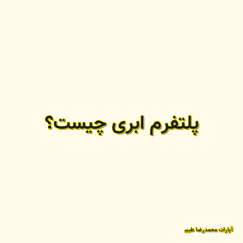

✖

پلتفرم ابری چیست؟
این قسمت، نشان میدیم که چطوری میشه یه سایت وردپرسی رو با PaaS ابرآروان ساخت.
آپارات محمدرضا طیبی 2020-02-25 16:52:00 مطالعه پست گزارش خرابی لینک / محتوای مجرمانه / تغییر محتویات لینک